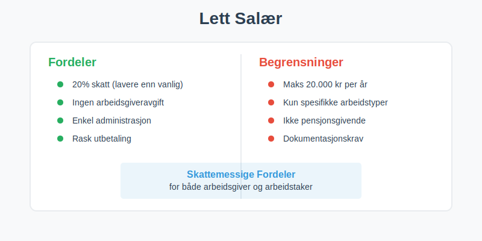
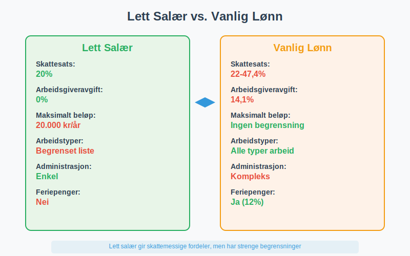
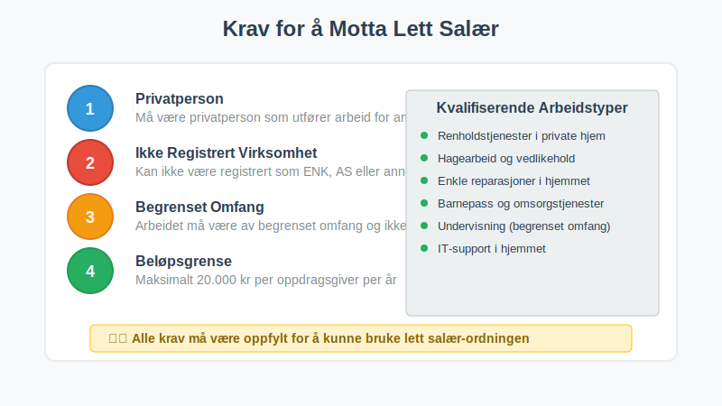
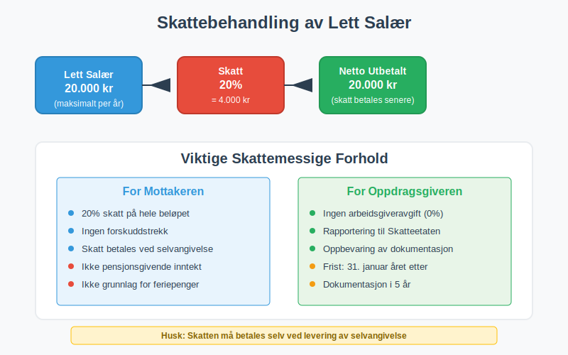
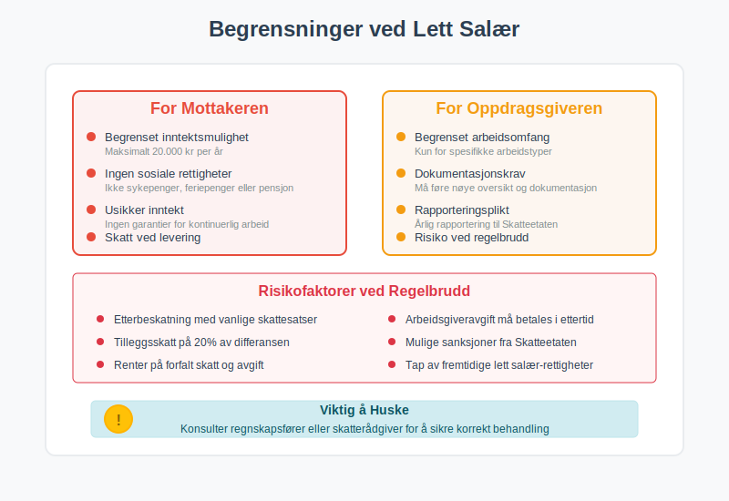
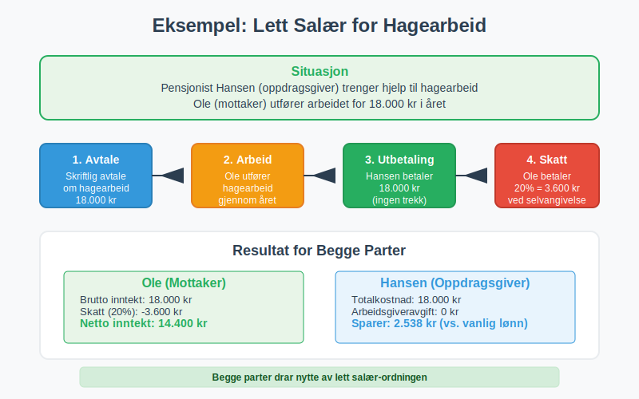
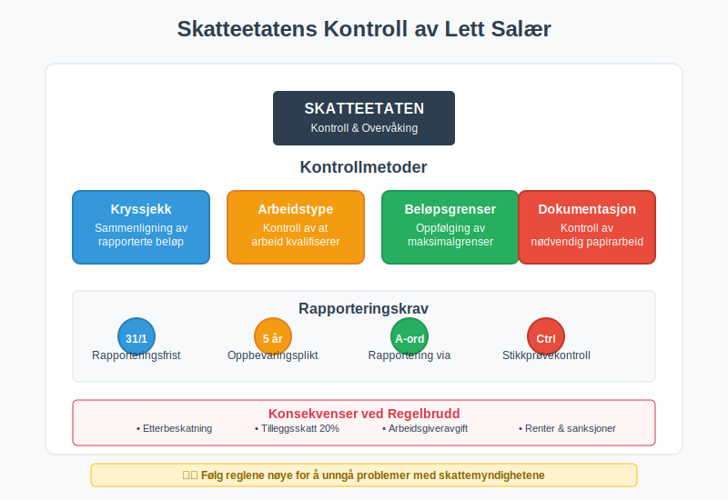

Lett salær er en spesiell lønnsordning i Norge som gir skattemessige fordeler for både arbeidsgiver og arbeidstaker. Ordningen innebærer at visse typer arbeid og tjenester kan lønnes med redusert skatt og avgifter, men har strenge regler og begrensninger som må følges nøye. Lett salær skiller seg fra vanlig fastlønn ved at det har lavere skattebelastning og enklere administrasjon.

Hva Kjennetegner Lett Salær?
Lett salær har flere spesielle karakteristikker som skiller det fra vanlig lønn:
- Redusert skattebelastning - lavere skattesats enn vanlig lønn
- Begrenset beløp - maksimalt 20.000 kr per person per år (2024)
- Spesifikke arbeidstyper - kun for visse typer arbeid og tjenester
- Enkel administrasjon - mindre byråkrati enn vanlig ansettelse
- Ingen arbeidsgiveravgift for arbeidsgiver
Lett Salær vs. Vanlig Lønn
Forskjellene mellom lett salær og vanlig lønn er betydelige:

| Aspekt | Lett Salær | Vanlig Lønn |
|---|---|---|
| Skattesats | 20% (2024) | Progressiv skatt (22-47,4%) |
| Arbeidsgiveravgift | 0% | 14,1% (varierer etter sone) |
| Maksimalt beløp | 20.000 kr/år | Ingen begrensning |
| Arbeidstyper | Begrenset liste | Alle typer arbeid |
| Administrasjon | Enkel | Kompleks med ansattreskontro |
Hvem Kan Bruke Lett Salær?
Arbeidstyper som Kvalifiserer
Lett salær kan kun brukes for spesifikke arbeidstyper:
- Renholdstjenester i private hjem
- Hagearbeid og vedlikehold av utendørsområder
- Enkle reparasjoner og vedlikehold i hjemmet
- Barnepass og omsorgstjenester
- Undervisning og veiledning (begrenset omfang)
- IT-support og teknisk hjelp i hjemmet
Hvem Kan Motta Lett Salær?
For å kunne motta lett salær må personen oppfylle visse krav:

- Privatpersoner som utfører arbeid for andre privatpersoner
- Ikke være registrert som enkeltpersonforetak eller selskap
- Arbeidet må være av begrenset omfang og ikke utgjøre hovedinntekt
- Maksimalt 20.000 kr per oppdragsgiver per år
Regler og Begrensninger
Beløpsgrenser
Lett salær har strenge beløpsgrenser som må overholdes:
| Begrensning | Beløp (2024) | Konsekvens ved overskridelse |
|---|---|---|
| Per person per år | 20.000 kr | Overskytende beløp beskattes som vanlig lønn |
| Per oppdrag | Ingen spesifikk grense | Må holdes innenfor årsgrensen |
| Samlet for alle oppdragsgivere | 20.000 kr | Total grense uavhengig av antall oppdragsgivere |
Dokumentasjonskrav
For å bruke lett salær må følgende dokumenteres:
- Skriftlig avtale mellom partene
- Beskrivelse av arbeidet som skal utføres
- Tidsperiode for arbeidet
- Beløp som skal utbetales
- Bekreftelse på at arbeidet er utført
Skattemessig Behandling
For Mottakeren
Personen som mottar lett salær har følgende skattemessige forhold:

- 20% skatt på hele beløpet (2024)
- Ingen forskuddstrekk - skatten betales ved levering av selvangivelse
- Ikke grunnlag for feriepenger
- Ikke pensjonsgivende inntekt
- Rapporteres i selvangivelsen som “Lett salær”
For Oppdragsgiveren
Oppdragsgiveren (den som betaler) har følgende forpliktelser:
- Ingen arbeidsgiveravgift å betale
- Rapportering til Skatteetaten innen 31. januar
- Oppbevaring av dokumentasjon i 5 år
- Utstedelse av dokumentasjon til mottaker
Regnskapsmessig Behandling
For Bedrifter som Betaler Lett Salær
Når en bedrift betaler lett salær, behandles det som en driftskostnad:
Debet: Tjenestekjøp/Konsulenthonorar 20.000 kr
Kredit: Bank/Kasse 20.000 kr
Rapportering og Oppfølging
Bedriften må:
- Registrere alle utbetalinger av lett salær
- Rapportere til Skatteetaten årlig
- Oppbevare all dokumentasjon
- Følge opp at beløpsgrensene overholdes
Fordeler og Ulemper
Fordeler for Mottakeren
| Fordel | Beskrivelse |
|---|---|
| Lavere skatt | 20% vs. progressiv skatt som kan være mye høyere |
| Enkel administrasjon | Ingen komplisert lønnsadministrasjon |
| Fleksibilitet | Kan kombineres med annet arbeid |
| Rask utbetaling | Ingen trekk eller forsinkelser |
Fordeler for Oppdragsgiveren
- Ingen arbeidsgiveravgift - sparer 14,1% i avgifter
- Enkel administrasjon - ingen ansattreskontro eller lønnskjøring
- Fleksibilitet - enkelt å engasjere hjelp ved behov
- Kostnadseffektivt - lavere totalkostnad enn vanlig ansettelse
Ulemper og Begrensninger

For mottakeren:
- Begrenset inntektsmulighet - maksimalt 20.000 kr per år
- Ingen sosiale rettigheter - ikke sykepenger, feriepenger eller pensjon
- Usikker inntekt - ingen garantier for kontinuerlig arbeid
- Skatt ved levering - må betale skatten selv ved selvangivelse
For oppdragsgiveren:
- Begrenset arbeidsomfang - kun for spesifikke arbeidstyper
- Dokumentasjonskrav - må føre nøye oversikt
- Rapporteringsplikt - årlig rapportering til Skatteetaten
Praktiske Eksempler
Eksempel 1: Renhold i Privat Hjem
Situasjon: Familie Olsen trenger hjelp til renhold og engasjerer Kari for 15.000 kr i året.
Behandling:
- Kari betaler 20% skatt = 3.000 kr
- Familie Olsen betaler ingen arbeidsgiveravgift
- Kari får utbetalt 15.000 kr, men må betale 3.000 kr i skatt ved selvangivelse
- Netto for Kari: 12.000 kr
Eksempel 2: Hagearbeid
Situasjon: Pensjonist Hansen trenger hjelp til hagearbeid og betaler Ole 18.000 kr i året.

Behandling:
- Ole betaler 20% skatt = 3.600 kr
- Hansen rapporterer utbetalingen til Skatteetaten
- Ole må oppgi inntekten i selvangivelsen
- Netto for Ole: 14.400 kr
Alternativer til Lett Salær
Når Lett Salær Ikke Passer
Hvis lett salær ikke er aktuelt, finnes andre alternativer:
| Alternativ | Når det Passer | Skattemessig Behandling |
|---|---|---|
| Honorar | Faglig arbeid, foredrag | Vanlig skatt + evt. arbeidsgiveravgift |
| Vanlig ansettelse | Kontinuerlig arbeid | Full skatt og avgifter |
| Frilansing | Selvstendig virksomhet | Næringsinntekt med fradragsmuligheter |
| Aksjeselskap | Større virksomhet | Selskapsskatt + utbytteskatt |
Endringer og Oppdateringer
Historiske Endringer
Lett salær-ordningen har gjennomgått flere endringer:
- 2012: Ordningen ble innført med 15.000 kr grense
- 2018: Grensen økt til 20.000 kr
- 2020: Skattesatsen justert til 20%
- 2024: Gjeldende regler med 20.000 kr grense og 20% skatt
Fremtidige Endringer
Regjeringen vurderer jevnlig endringer i ordningen:
- Beløpsgrenser kan justeres for inflasjon
- Arbeidstyper kan utvides eller begrenses
- Skattesatser kan endres basert på skattepolitikk
Kontroll og Sanksjoner
Skatteetatens Kontroll
Skatteetaten fører kontroll med lett salær-ordningen:

- Kryssjekk av rapporterte beløp
- Kontroll av at arbeidstyper kvalifiserer
- Oppfølging av beløpsgrenser
- Sanksjoner ved regelbrudd
Konsekvenser ved Regelbrudd
Ved brudd på reglene kan følgende skje:
- Etterbeskatning med vanlige skattesatser
- Tilleggsskatt på 20% av differansen
- Arbeidsgiveravgift må betales i ettertid
- Renter på forfalt skatt og avgift
Konklusjon
Lett salær er en nyttig ordning for både oppdragsgivere og mottakere når den brukes riktig. Ordningen gir skattemessige fordeler og enklere administrasjon, men krever nøye oppfølging av regler og begrensninger.
Viktige punkter å huske:
- Maksimalt 20.000 kr per person per år
- 20% skatt for mottaker, ingen arbeidsgiveravgift for oppdragsgiver
- Kun for spesifikke arbeidstyper
- Krav til dokumentasjon og rapportering
- Ikke pensjonsgivende eller grunnlag for sosiale ytelser
For bedrifter som vurderer lett salær, er det viktig å konsultere regnskapsfører eller skatterådgiver for å sikre korrekt behandling og unngå problemer med skattemyndighetene.